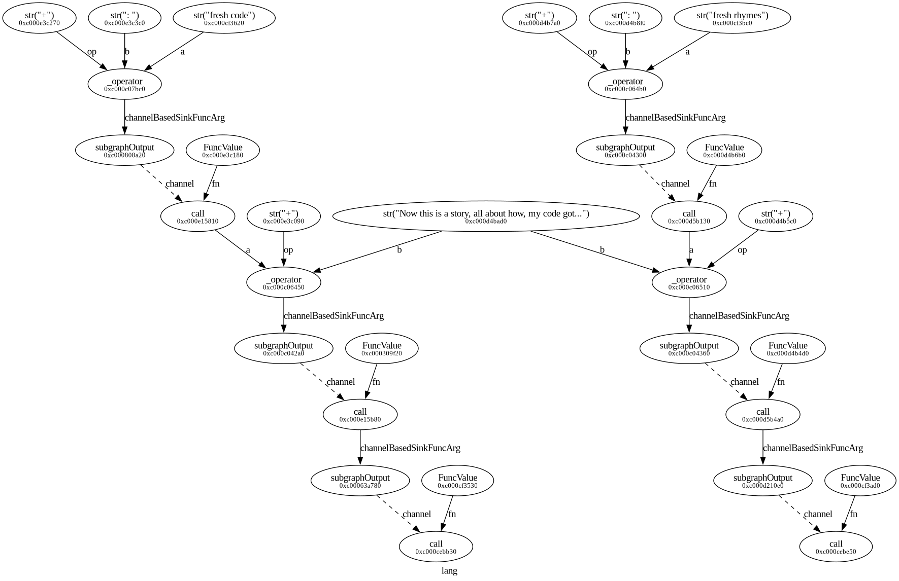
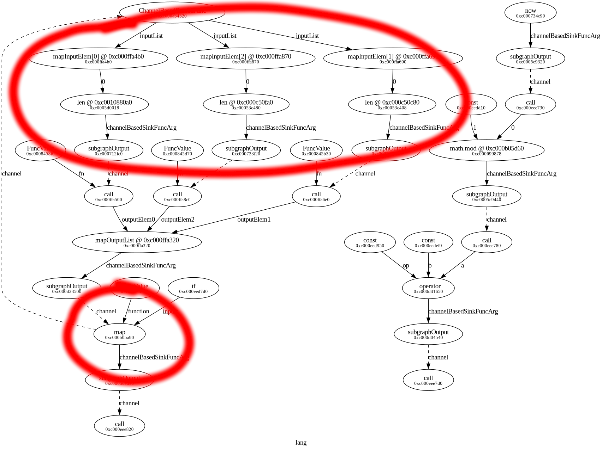

It’s been a little while since I introduced the Mgmt Configuration Language. I originally wrote this article in 2019, and as I was working on it alongside the code for functions, when I realized that lambdas didn’t work properly. It took some time to finally solve that properly. Since then I’ve been working to get mgmt production ready. It’s properly useful for production now, and so it’s time for me to catch up on my documentation. I’ve revived and updated this article, let’s go…
I’d like to introduce some of the missing features that weren’t available when the language was first introduced. If you haven’t already read that post, and the post on classes, please start there and come back when you’re finished. In this article we’ll learn about functions.
Mgmt has different kinds of functions
in its mcl language. The built-in functions can be present in the global scope
or provided by one of the core
modules. Most of the functions are pure,
although there are a few inconsequential exceptions. A brilliant programmer
friend of mine believes that the literature might refer to this model as:
“imperative shell, functional core”. I’m not entirely acquainted with how
academia might perceive my work, so I’ll leave it up to you to decide if that’s
an accurate description of mcl.
These built-in functions must be implemented in golang. I merged a
giant patch
which allows you to write custom functions in mcl. These can be used as core
functions, or as user-defined functions inside your own code. You can use them
as expressions anywhere you might normally find an expression. They can be
defined with the func statement, or as a lambda
expression. The internal function API has changed a bit since I first
implemented it, so make sure to read on below for more information.
Similar to the class statement which lets you parameterize statements, the
func statement lets you parameterize an expression, which it returns when
invoked. They look like this:
import "fmt"
# function statement
func sq1($x, $y) {
$x * $x + $y
}
# function expression
$sq2 = func($x, $y) {
$x * $x + $y
}
$x1 = sq1(3, 4) # 3^2 + 4 = 13
$x2 = $sq2(7, -7) # 7^2 - 7 = 42
print "fn1" {
msg => fmt.printf("sq1: %d", $x1),
}
print "fn2" {
msg => fmt.printf("sq2: %d", $x2),
}
The body of any function must be a single expression, and in both cases, you
call a function by invoking its name with a set of parentheses and the list of
arguments. In the second situation where we’re storing an anonymous lambda in
the variable $sq2, you can use the variable name (including the leading $)
to call it. (Calling a function is itself a valid expression, called a “call
expression”.)
Is the following code valid? It seems the identifier foo is over used.
import "fmt"
func foo() {
42 # returns 42
}
$foo = func() {
43 # returns 43
}
class foo($a) {
print "hello" {
msg => fmt.printf("is %d the answer?", $a),
}
}
include foo(42)
print "world" {
msg => fmt.printf("sum: %d + %d = %d", foo(), $foo(), foo() + $foo()),
}
As it turns out, it is! There is no conflict, because the scope has a separate
map to store function definitions, variable definitions (which may be either
function values or ordinary values) and class definitions. While it might be
confusing if you have one of each that are all named foo, it’s still perfectly
legal. You can even have an import that imports a module named foo, and it
will not conflict with the other named nodes. Don’t worry that you haven’t seen
import yet. We’ll get to that in a future article, but it should be easy for
you to make some assumptions for now.
Functions can capture scope. This is particularly useful because the body can only contain a single expression. If you’d like to break expressions into multiple lines, then scope capturing is essential. These are often called “closures”.
Examine the following:
import "fmt"
$x1 = 42 # this variable gets captured by foo
$x2 = 13 # this variable gets captured by bar
$foo = func($somearg1) {
$x1 + $somearg1
}
func bar($somearg1) {
$x2 + $foo($somearg1) # we even capture the $foo function here
}
print "answer" {
msg => fmt.printf("the answer is: %d", bar(45)), # 100
}
As you can see, both variables $x1, and $x2, as well as variable $foo,
which holds a function value (an anonymous lambda function) are all captured
somewhere in the program. This runs correctly as you’d expect. It’s a powerful
tool, which I’m sure you will benefit from when writing your programs.
Now that you’re familiar with scope capture in functions, you should also be aware of shadowing. If a function argument has the same name as a variable in a parent scope, then the argument will take precedence and overwrite that variable, but only within the scope of that function. To use a variable in a parent scope, either ensure that you name your argument differently, or pass in the variable when calling the function. Here’s a simple example:
$foo = "bad1" # this won't get used
func bar($foo) {
"hello " + $foo # shadows parent var
}
$bar = func($foo) {
"hello " + $foo # shadows parent var
}
print "answer1" {
msg => bar("world"),
}
print "answer2" {
msg => $bar("world"),
}
In both cases, this will print hello world, because the variable in the global
scope gets shadowed by the argument name.
As with every program, our type unification engine determines the static types that each variable and value will have at runtime. Functions can be polymorphic and can have more than one possible type signature before compile time, but this can be restricted by adding additional constraints. You can add these constraints on any function argument or its return type. It looks like this:
import "fmt"
func weirdlen($a []int, $b) int {
len($a) + $b
}
$l1 = weirdlen("hello", 5) # won't compile because of type restriction on $a
$l2 = weirdlen([13, 42, 0, -37,], -3)
print "l1" {
msg => fmt.printf("l1: %d", $l1),
}
print "l2" {
msg => fmt.printf("l2: %d", $l2),
}
In the above example, we added a type restriction on the first arg of the
function that forces that input to be a list of int’s ([]int), and another
that forces the return value to be an int. As a result, this won’t compile,
because the first invocation of the function passes in an str. If we remove
the type limitation, then this works as expected. In general, it’s recommended
to avoid specifying any types, unless you want to explicitly prevent (for safety
reasons) the user from specifying a specific type.
Interestingly, you can’t have polymorphic lambdas. The following code is NOT valid, but if you remove either invocation, then it will work:
# polymorphic lambda variables (not supported!)
import "fmt"
$double = func($x) {
$x + $x
}
$num = 2
$out1 = $double($num) # 4
print "t1" {
msg => fmt.printf("%d + %d is %d", $num, $num, $out1), # simple math
}
$val = "hello"
$out2 = $double($val) # hellohello
print "t2" {
msg => fmt.printf("%s + %s is %s", $val, $val, $out2), # simple concat
}
+ (plus) operator supports
adding integers and floats, and even concatenation of strings, the variable
$double must have a single type, which happens to be a function! If you want
to write this kind of code, instead declare the double function as a statement
which will work.
Unfortunately, recursive functions are not supported. They present a form of dangerous iteration that would require a “higher-order FRP”, which would add a significant amount of complexity and danger to our programs. Here’s a case of an invalid program, which is caught by the compiler:
# recursive function (not supported!)
import "fmt"
func sum($input) {
if $input < 0 {
-1 * sum(-1 * $input)
} else {
if $input == 0 {
0 # terminate recursion
} else {
$input + sum($input - 1)
}
}
}
$out1 = sum(4) # 4 + 3 + 2 + 1 + 0 = 10
$out2 = sum(-5) # -5 + -4 + -3 + -2 + -1 + -0 = -15
print "nope1" {
msg => fmt.printf("sum(4) is %d", $out1),
}
print "nope2" {
msg => fmt.printf("sum(-5) is %d", $out2),
}
While this looks like it would be a lot of fun, and as you can see I considered
it carefully, it is not supported. Similar functions that co-recurse, as well as
lambda variants, are all caught by the compiler and rejected. It’s easy to catch
these things, because in an FRP, they would not form a DAG!
A simple topological sort will catch this, and as such, this code errors with:
could not set scope: recursive reference while setting scope: not a dag.
Functions are first-class values alongside bool, str, int, float,
list, map, and struct. As a result, there’s no reason that a function
can’t return another function! This lets us build some interesting function
generators. Here’s an example:
func funcgen() {
func() {
"hello"
}
}
$fn = funcgen() # get a function as a return value of calling this function
$out = $fn() # call that returned function
print "wow" {
msg => $out, # prints "hello"
}
Of course this can get more complicated, and any of the functions involved can always have their own arguments. For example:
func funcgen($cond, $punctuation) {
if $cond {
func($a) { # the arg is ignored but is needed so the sig matches
"hello world" + $punctuation # i captured punctuation!
}
} else {
func($a) {
if $a == "" {
"hello" + $punctuation
} else {
"hello: " + $a + " " + $punctuation
}
}
}
}
$fn = funcgen(false, "!") # get a function as a return value of calling this
$out = $fn("hacker") # call that returned function
print "complex wow" {
msg => $out, # prints "hello: hacker !"
}
While this code is a bit contrived, it’s an example of how you can get fancy with returned functions. And the magic part is that all the type unification happens automatically without any hints!
As is common in many programming languages, functions are defined with named arguments, and called with positional arguments. It’s a bit of a strange behaviour to use two different systems, but as we’ll see, there are some logical reasons why. As an example:
func foo($a, $bar, $cat) {
# use $a, $bar, and $cat in here...
}
$out = foo(42.0, "---", "miau")
The function gets defined with three named args, but is called positionally. The compiler must do the work to determine which function signature is associated with the call expression, and then map those onto the variable scope, so that inside the function those variables are defined correctly.
You might wonder if it’s better off to require that function definitions use
positional args in their bodies. Some languages like bash permit this with the
use of $1, $2, and so on in their body. Alternatively, you might wonder if
it’s not better to have the caller specify each argument by name. Some languages
like python do this by having the caller specify them each individually:
foo(a=42.0, b="---", cat="miau").
Ultimately, choosing the common approach led to the simpler implementation for a few reasons:
Supporting hybrid variants where both approaches are allowed only adds unnecessary complexity.
Therefore, internal function definitions would have to have memorable
argument names so that their use wasn’t more complicated. Nobody really wants to
write more than len("hello") when retrieving a string length. Requiring a
len(whatever="hello") would be burdensome. Using $1 type args is not very
readable for function authors either.
The internal scope storage allows for a “stack” of called arguments, which can be shifted onto the running function, only when it is reached. What this means is that if you’re passing an arg into one of two or more possible returned functions, each could have it’s own differently named arguments and still be compatible. Without this, we’d have to endlessly wrap functions in argument name signature changers to call foreign functions. An example shows this best:
$funcgen = func() {
func($aaa) {
"hello" + $aaa
}
}
$some_bool = true # this might change over time
$fn = if $some_bool { # switches between one of two functions
$funcgen() # returns a function
} else {
func($bbb) { # anonymous function definition
"world" + $bbb
}
}
$out = $fn("world") # what would the argument name have to be?
print "foo" {
msg => $out,
}
While this might be a bit tricky to unpack, if you look closely, you’ll see that
when we call the $fn function, it could correspond to one of two different
implementations, which, in our FRP,
could change over time. If we required specifying the argument name, then we’d
have to ensure the different function implementations had compatible input
arguments, in addition to having the same signatures. As you can see, they have
different argument names. The top-most variant names the first arg $aaa, while
the second function names its input $bbb.
When you call a function (via the call expression), it effectively copies the
body and builds the correct expression in its place. You might think that this
gets expensive quickly, but in fact it is quite efficient. Consider the
following code:
$big_data = "Now this is a story, all about how, my code got..."
func lyrics($input) {
$input + ": " + $big_data
}
print "l1" {
msg => lyrics("fresh code"),
}
print "l2" {
msg => lyrics("fresh rhymes"),
}
Here’s a graph of the data flows that the function engine will run:
|  |
| The function engine data flows of the above code. Notice how the raw value of the $big_data string only appears once. |
Even though the $big_data variable gets pulled into the lyrics function for
each invocation, the initial copy is the only one that’s used in the function
graph. This is because we perform an intelligent “light copy” when running
call, and anything that is a bound constant, remains that way. Enjoy the
memory gains!
(As a quick aside, a future compiler optimization will actually simplify this
graph substantially. I haven’t been blocked or constrained by the lack of this
optimization yet, so it hasn’t been prioritized, but there is lots of exciting
work left to do in mgmt!)
As I mentioned in the earlier language post,
code is actually a graph
and as a result can be written out-of-order. If you experiment with re-arranging
the ordering of the statements, you’ll find that everything still works
correctly. This can be useful for situations when you might prefer to define the
function before it is used, or for when you want to see your business logic
that performs different call’s at the top, and have the internals down at the
bottom.
In general, it is recommended that you avoid out-of-order code, but at the moment it is allowed. There is a compile-time constant that specifies whether it is allowed or not, and there is another one that specifies whether it should allow it, but generate a warning. Neither is fully implemented because we are missing one function in our graph library. If you can write a function that returns whether a given ordering is a valid subset of one of the possible topological sorts for that graph, then please let us know!
One of the most exciting uses of functions is when we can pass them as arguments to other functions! Enabling this and the idea of functions as first-class values was the hardest compiler problem I ever encountered. It’s no wonder that early compiler authors never implemented this. I guess I shouldn’t feel so bad.
Here’s the canonical example:
import "golang"
import "iter"
$fn = func($x) { # notable because concrete type is fn(t1) t2, where t1 != t2
len($x)
}
$in1 = ["a", "bb", "ccc",]
# NOTE: a future version of mgmt may rename iter.map to list.iter (list module)
$out1 = iter.map($in1, $fn) # takes a lambda, and is implemented as a core lib!
print "example" {
msg => fmt.printf("%v", $out1),
}
As you see our function value gets passed into the iterator function. This one
is a built-in, but of course you could supply your own function instead. Of note
here, this is a healthy form of safe iteration in mgmt! If you haven’t heard
of map style iteration, have a quick read.
Keep in mind that everything can still vary over time, so if you want to see a real-time, contrived, complex example, have a look here:
import "datetime"
import "fmt"
import "iter"
import "math"
$mod = math.mod(datetime.now(), 2) == 0 # alternate every two seconds
$fn = func($x) { # notable because concrete type is fn(t1) t2, where t1 != t2
len($x)
}
$in1 = if $mod { ["a", "bb", "ccc",] } else { ["zzzzzz", "yyyyy", "xxxx",] }
# NOTE: a future version of mgmt may rename iter.map to list.iter (list module)
$out1 = iter.map($in1, $fn) # takes a lambda, and is implemented as a core lib!
print "example" {
msg => fmt.printf("%v", $out1),
}
One last beautiful aspect of lambdas. In order to make this possible, it turns
out that the function graph can’t actually be static! This is because you might
need a small subgraph to appear if you were processing a list of five values,
where the size of the list might not be known until runtime. As a result, when
necessary, we actually grow and shrink the function graph during runtime. This
is one of the main reasons that getting lambdas working properly was so
difficult. I have time-series snapshots of graph structures in graphviz .dot
format. If you have a tool that can animate these nicely, I’ll make some nerd
beautiful videos of this happening. Here’s a static snapshot of the expanded
subgraph where it’s processing the three values from the list.
|  |
| You can see the map function, and the subgraph with the three list elements. |
I now need to briefly step away from functions and tell you about a new feature
relating to classes. There’s a fairly extensive post about classes
in mgmt that’s already available. if you’re not familiar with that, please go
refresh your knowledge first. The new information, is that when you include a
class, you can give that individual instantiation a unique handle. Here’s an
example:
import "fmt"
class class1 {
noop "foo" {} # this resource gets pulled out
$foo = "hello" # this value can be exported outside the class
}
include class1 as identifier1
print "hello" {
msg => fmt.printf("%s", $identifier1.foo), # hello
}
As you can see, when we include class1, we can give that instantiation a
unique identifier, which we can refer to elsewhere in that scope! Since the
class happened to have a bind statement that can be seen and used.
Complex examples with nested classes and parameterized classes are also legal. See if you can digest what’s happening here:
import "fmt"
class outer {
print "foo" {} # this resource gets pulled out
$ret = "hello" # gets exported
class inner {
print "bar" {} # this resource gets pulled out
$ret = "goodbye"
}
}
include outer as ident_outer # first include the outer class
include ident_outer.inner as ident_inner # now pull out the inner class!
print "print0" {
msg => fmt.printf("%s", $ident_outer.ret), # hello
}
print "print1" {
msg => fmt.printf("%s", $ident_inner.ret), # goodbye
}
As you can see we first include the outer class, and then with that
identifier we can then pull out the inner class. The resources that are seen are
now part of the resource graph! You can also capture the values as well.
Here’s one more:
import "fmt"
class class1($in1) {
noop "foo" {} # this resource gets pulled out
$result = "hello " + $in1 # gets exported
}
include class1("world") as identifier1
include class1("james") as identifier2
print "msg1" {
msg => fmt.printf("%s", $identifier1.result), # hello world
}
print "msg2" {
msg => fmt.printf("%s", $identifier2.result), # hello james
}
If you noticed that the parameter was passed in and made part of the result,
you’d be correct. Different instantiations have different states of course. You
can also see that a resource is defined in the class. When you include a class
that contains a number of resources or edges, those get pulled out to be part of
the resource graph.
duplicate resource style error, but mgmt allows duplicate identical or
compatible resource definitions, so this isn’t a bug!
At this point you may have realized that the body of a function can only contain
a single (expr) expression. This may be inconvenient if you want to write more
readable code or have a value in the composition be used in more than one place.
As you may have now realized, you can use a class as a type of function call!
For example:
import "fmt"
import "golang/math"
class pythagorean_theorem($a, $b) {
# c^2 = a^2 + b^2
$a2 = $a * $a
$b2 = $b * $b
$sum = $a2 + $b2
$c = math.sqrt($sum)
}
include pythagorean_theorem(3.0, 4.0) as out
print "result" {
msg => fmt.printf("%f", $out.c), # we expect 5.0
}
Of course we could write all those steps on a single line and use a regular function, this is just an example! I did consider adding some sort of syntactic sugar around this, to make it easier or as familiar as a regular function call, but at least for the short term I think it’s great as is.
What if we want to return more than one value? There are two main ways to do it.
You may have already realized this solution. What’s interesting here is that we can access any intermediate value that we want! For example:
import "fmt"
import "golang/math"
# of the form: a*x^2 + b*x + c == 0
class quadratic_formula($a, $b, $c) {
# x = (-b +/- sqrt(b^2 - 4ac)) / 2a
panic($a == 0.0) # a can't be zero
$sqrt = math.sqrt(($b * $b) - (4.0 * $a * $c))
$negb = -1.0 * $b
$x1 = ($negb + $sqrt) / (2.0 * $a)
$x2 = ($negb - $sqrt) / (2.0 * $a)
}
include quadratic_formula(1.0, 5.0, 6.0) as out
print "result" {
msg => fmt.printf("x1 = %f and x2 = %f", $out.x1, $out.x2), # we expect -2 and -3
}
You get two values out!
A function can return a struct with multiple keys. This is sometimes more useful if you are passing data around since you now only need one variable to hold it all. For example:
import "fmt"
import "golang/math"
# of the form: a*x^2 + b*x + c == 0
func quadratic_formula($a, $b, $c) {
# x = (-b +/- sqrt(b^2 - 4ac)) / 2a
#panic($a == 0.0) # a can't be zero
struct{
x1 => ((-1.0 * $b) + math.sqrt(($b * $b) - (4.0 * $a * $c))) / (2.0 * $a),
x2 => ((-1.0 * $b) - math.sqrt(($b * $b) - (4.0 * $a * $c))) / (2.0 * $a),
}
}
$out = quadratic_formula(1.0, 5.0, 6.0)
print "result" {
msg => fmt.printf("x1 = %f and x2 = %f", $out->x1, $out->x2), # we expect -2 and -3
}
As you can see, this version is less readable and more repetitive. This may not be the case with other things that you want to implement. Over time you’ll learn to use your judgement to decide the best way to write your code. If your function is getting quite large, part of it may even be a good candidate for inclusion into the standard library!
With what you now know, I’m sure you’ll be ready to write tons of useful mcl
code. If you really want to go further, here’s how you can write a new internal
mcl function in pure golang!
package coreexample
import (
"context"
"github.com/purpleidea/mgmt/lang/funcs/simple"
"github.com/purpleidea/mgmt/lang/types"
)
func init() {
simple.ModuleRegister(ModuleName, "basic_plus", &simple.Scaffold{
T: types.NewType("func(a int, b int) int"),
F: BasicPlus,
})
}
// BasicPlus returns a + b.
func BasicPlus(ctx context.Context, input []types.Value) (types.Value, error) {
y, z := input[0].Int(), input[1].Int()
// Of course you may wish to do something more excited or complicated in
// here!
return &types.IntValue{
V: y + z,
}, nil
}
If you drop this file in the core/example/
folder (for example) this function will become available in mcl as
example.basic_plus. More complicated versions of the function API are possible
if you want to do much more complicated things, but this should get you through
most of what you’ll want to do.
We finally have a documentation site for all of our functions. You can help us improve the library and the documentation by sending a patch!
I hope you love the language! Please help sponsor this project if you want to see more of it.
Enterprise support, training, and consulting are all available.
Happy Hacking,
James
You can hire James and his team at m9rx corporation.
You can follow James on Mastodon for more frequent updates and other random thoughts.
You can follow James on Twitter for more frequent updates and other random thoughts.
You can support James on GitHub if you'd like to help sustain this kind of content.
You can support James on Patreon if you'd like to help sustain this kind of content.
Your comment has been submitted and will be published if it gets approved.
Click here to see the patch you generated.
{kind=link}
{kind=link}
Comments
Nothing yet.
Post a comment